Your music.
In the browser. Calm and clear.
OSW – Open Sonos Web is a clean, open-source web interface for every room – with Spotify browsing, synced lyrics and a full-screen stage view. In white or in black.
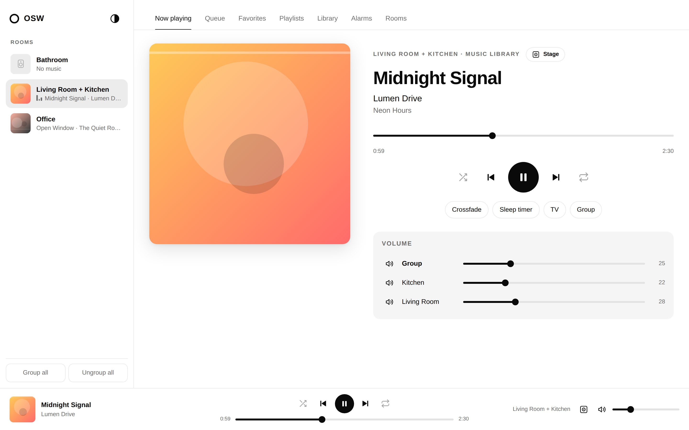
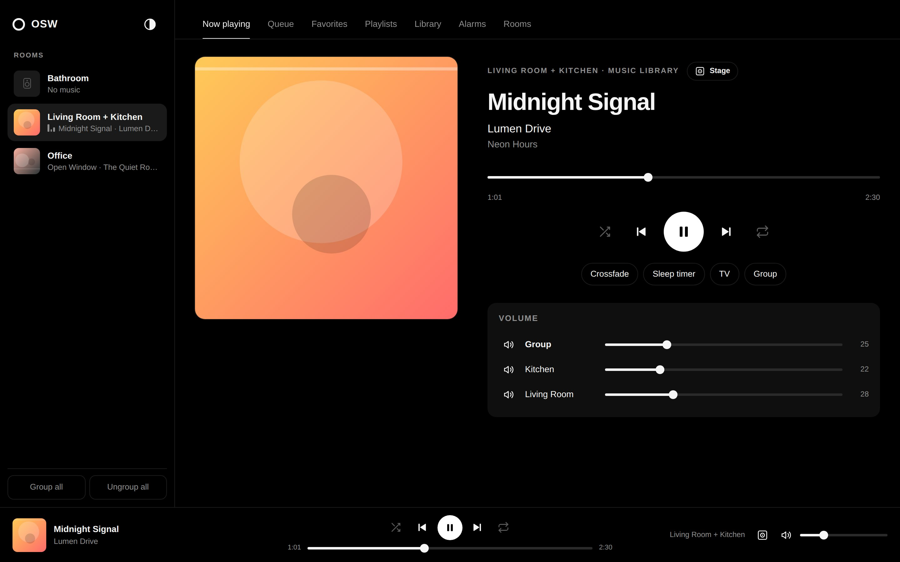
Everything you use the Sonos app for, day to day.
It talks directly to your speakers on the home network – no account, no cloud, no tracking.
Playback
Play/pause, seek, shuffle, repeat, crossfade, sleep timer, TV and line-in.
Rooms & groups
Group and ungroup rooms, party mode, group and per-room volume.
Music services
Browse Spotify and more – a home page with reorderable rows, your library, search.
Queue & playlists
Drag & drop reordering, save the queue as a playlist, playlists with cover mosaics.
Alarms
Create and edit alarms – specific weekdays, favorites as wake-up music, volume, duration.
Sound & device
Bass, treble, balance, loudness, night mode, speech enhancement, sub, surround, LED, button lock.
Less menu.
More music.
An alternative now-playing view for a tablet, a TV or a second screen.
- Large cover art, background tinted with the album's colors
- Time-synced lyrics (LRCLIB)
- Artist info with photo (Wikipedia)
- Muted, synced music video – blurred in the background or up front
- Controls fade away, full screen with one click
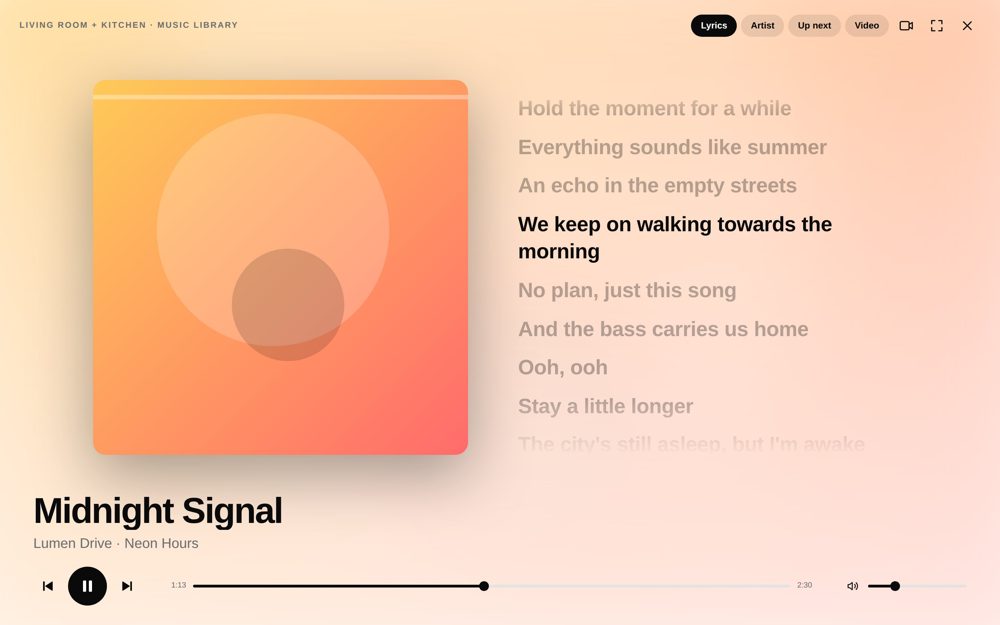
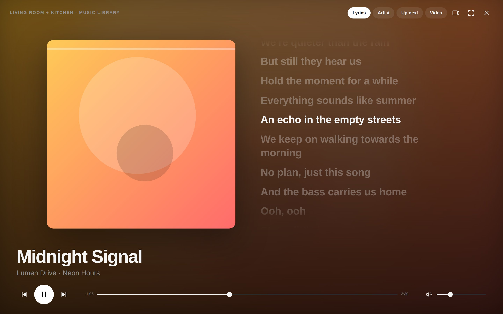
Your services,
row by row.
Link once, then browse Spotify right in the interface. Every row scrolls sideways – and you decide the order, synced across all devices.
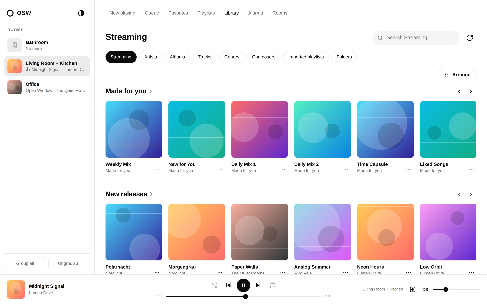
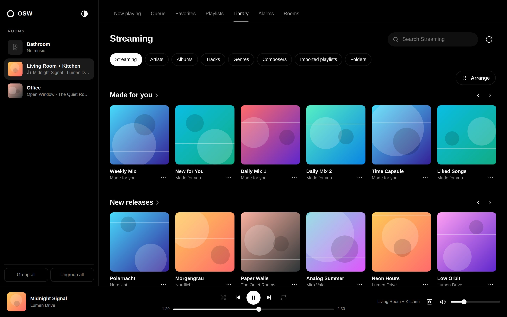
Quiet, clear, black and white.
No colors except your music. The theme follows your system – or switch it yourself.
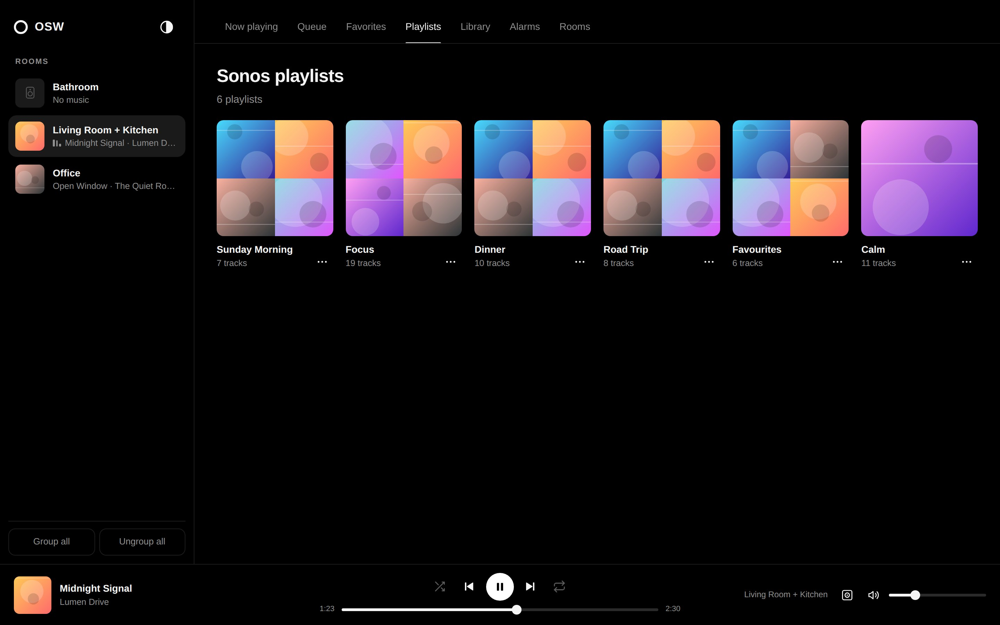
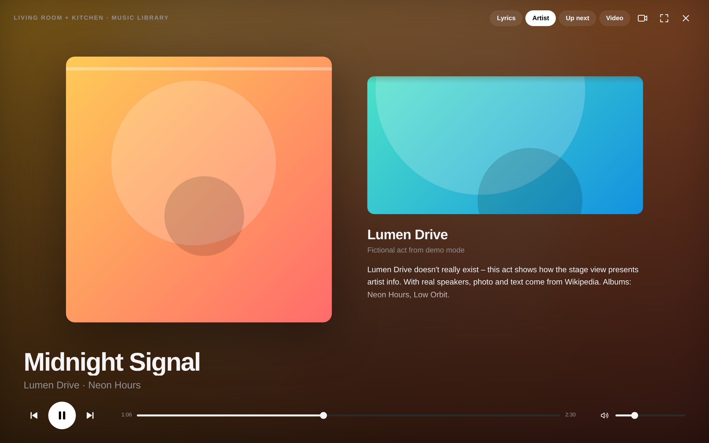
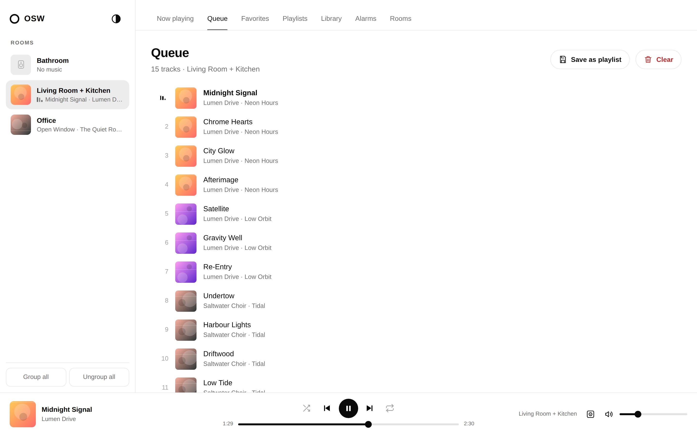
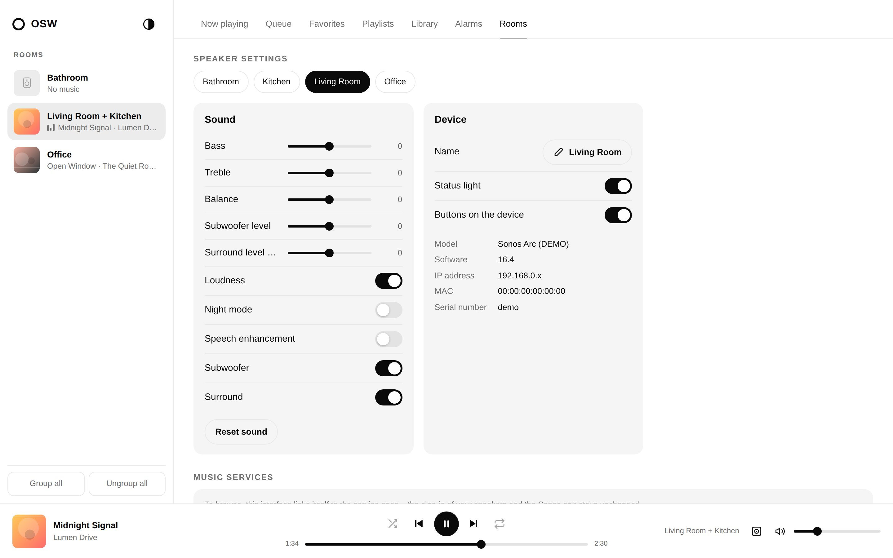
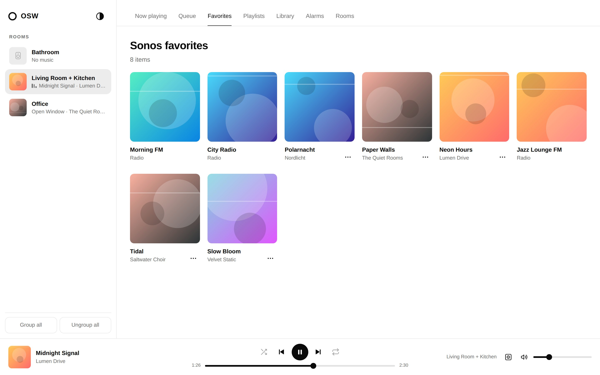
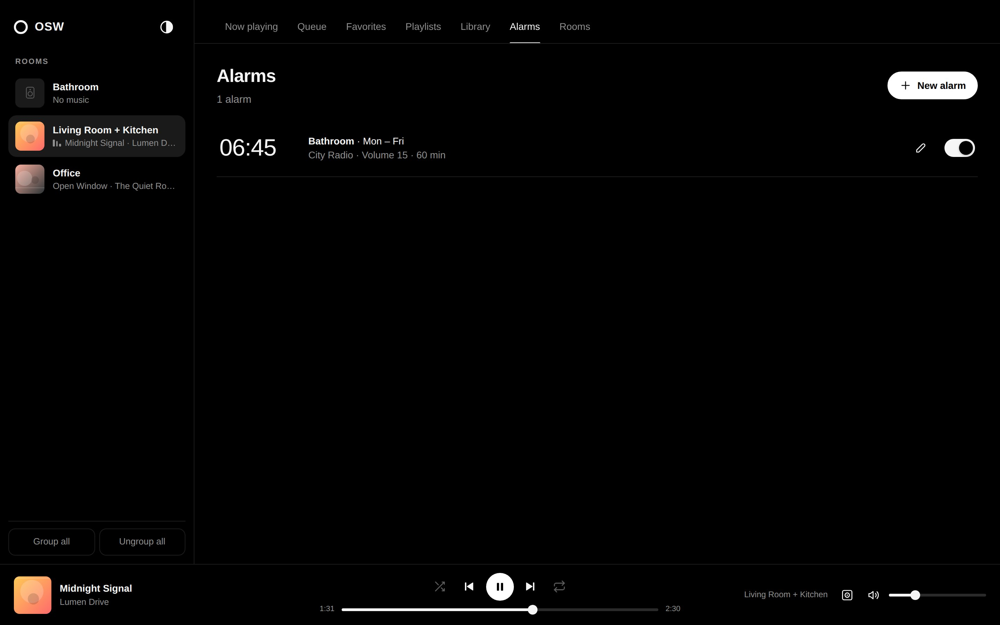
Made for your phone.
Room picker as a bottom sheet, swipeable rows, large controls.
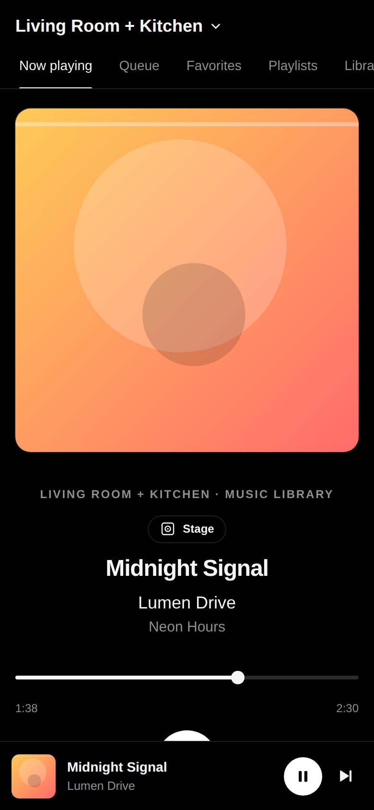
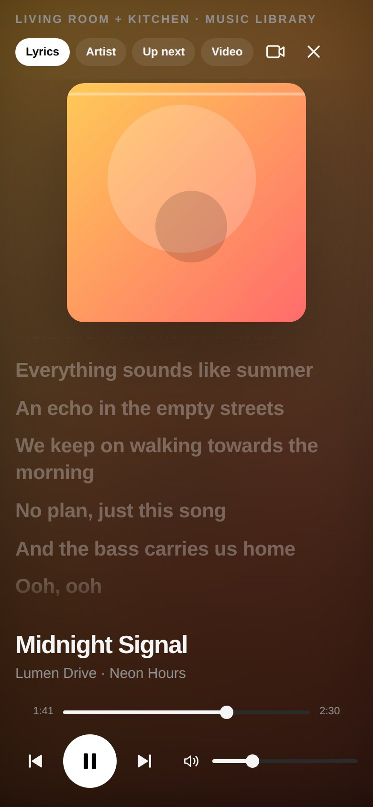
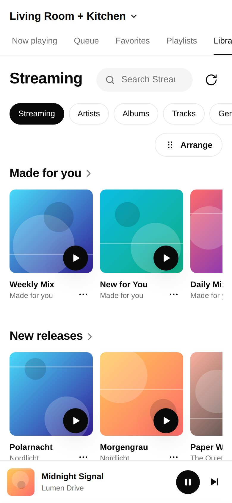
Up and running in two minutes.
Runs wherever Python 3.10+ or Docker runs – ideally on a device on the same network as your speakers (Raspberry Pi, NAS, PC).
Download
Clone the repository.
git clone https://github.com/mupf-dev/open-sonos-web
cd open-sonos-webStart
With Python (sets up its own environment) or Docker:
./run.sh
# or
docker compose up -dOpen
Open it in your browser. If discovery finds nothing, enter the IP address of one speaker.
http://localhost:8080Just want to look around? ./run.sh --demo starts a simulated system with four rooms – exactly like on this page.
The fine print.
Local, no login
Anyone who can reach the page on your network can control the speakers – just like the Sonos app. Do not expose it to the internet.
External services
For lyrics, artist info and videos, artist and title are sent to LRCLIB, Wikipedia and YouTube – only in the stage view.
Music services
To browse, the interface links itself to the service once. Your speakers' own sign-in stays untouched.
Your language
English and German are built in and follow your browser. Another language is just one JSON file – see TRANSLATING.md.
Open source
MIT-licensed, no build step: Python (FastAPI + SoCo) and plain HTML, CSS and JavaScript.
Still a job for the Sonos app
Setting up speakers, firmware updates, Trueplay tuning and voice assistants still happen there.